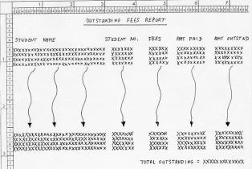

Introduction
At the beginning of each term Student Services creates a report showing those students whose fees are still outstanding. Until now this report was created manually but because the task is very time consuming Student Services have decided to computerise it. You have been asked to write the program which will apply a transaction file of student payments to the Student Master File and which will then produce a report showing those students whose fees are partially or wholly outstanding. The Student Payments transaction file is a validated sequential file sorted on ascending Student-Number.
The Task
A program is required which will use the payment records in the Student Payments File to
update the Amount-Paid field in the Student Master File and which will then use the Student
Master File to produce a report showing the fees outstanding.
Fees may be paid in one payment or in increments. Therefore when the Amount-Paid field is
updated the value of the payment should be added to the current value of the Amount-Paid
field. There is no need to take overpayment of fees into account (i.e. the value in the
Amount-Paid field will never exceed that in the Fees-Owed field .
The OUTSTANDING FEES REPORT should be printed sequenced on ascending Student-Name. Only
records where the Amount-Paid field is less than the Fees-Owed field should be shown. At the
end of the report the total amount outstanding should be shown.
The Student Payments File
The Student Payments File is a sequential file that has been validated and sorted on ascending Student-Number. Each record has the following format;
|
Field |
Type |
Length |
Value |
Student-Number |
N |
7 |
- |
Payment |
N |
6 |
0.01-9999.99 |
The Student Master File
The Student Master File is an Indexed file. It contains details of all the students taking courses in the University. Each record has the following format;
|
Field |
Key |
Type |
Length |
Value |
Student-Number |
Primary |
N |
7 |
- |
Student-Name |
Alt with duplicates |
X |
30 |
- |
Gender |
- |
X |
1 |
M/F |
Course-Code |
- |
X |
4 |
- |
Fees-Owed |
- |
N |
4 |
1000-9999 |
Amount-Paid |
- |
N |
6 |
0-9999.99 |
Report Specification
The Fees field is a currency value with no digits after the decimal point. The field should have comma insertion and a floating dollar sign. The Amount Paid, Amount Outstanding and Total Outstanding fields are currency values with floating dollar signs, comma insertion and two digits after the decimal point. There is no need to worry about page breaks or line counts.

Click for full size version
{kind=link}